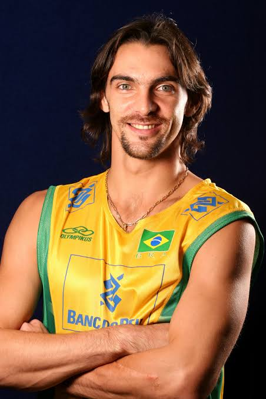

Marii Jucători ai Voleiului Mondial

Karch Kiraly (SUA)
Considerat cel mai mare jucător de volei din toate timpurile, Karch Kiraly este singurul sportiv care a
câștigat medalii olimpice atât în volei de sală (aur în 1984 și 1988) cât și pe plajă (aur în 1996). Născut în
1960, Kiraly a dominat sportul timp de trei decenii, fiind cunoscut pentru versatilitatea sa și etica sa de
muncă incredibilă.
În cariera sa de volei de sală, a câștigat toate trofeele importante, inclusiv Campionatul Mondial. După
trecerea la voleiul pe plajă, a continuat să domine, câștigând peste 148 de turnee profesioniste. Kiraly este
acum antrenorul echipei naționale feminine a SUA, continuând să contribuie la dezvoltarea voleiului.

Gilberto Godoy Filho (Giba) (Brazilia)
Giba, poreclit "Tigrul", este una dintre cele mai carismatice figuri ale voleiului mondial. Născut în 1976,
acest brazilian a condus echipa națională a Braziliei la numeroase victorii, inclusiv Campionatul Mondial din
2002 și medalia de aur olimpică la Atena 2004.
Cunoscut pentru atacurile sale explozive și spiritul său de lider, Giba a fost desemnat cel mai bun jucător
al lumii de trei ori. După retragerea din activitatea competițională, a devenit un important ambasador al
sportului, implicându-se în numeroase proiecte de promovare a voleiului în comunitățile sărace din Brazilia.

Dmitriy Shekhtin (Rusia)
Legendă a voleiului rus, Shekhtin a fost unul dintre cei mai temeri jucători de la fileu din anii '90. Cu o
înălțime de 2,03m, a condus echipa Uniunii Sovietice la multiple titluri mondiale și europene.
Shekhtin a fost cunoscut pentru tehnicile sale inovatoare de atac și pentru abilitatea de a citi jocul
adversarilor. După retragere, a devenit unul dintre cei mai respectați antrenori din Europa, contribuind la
dezvoltarea noilor generații de jucători ruși.